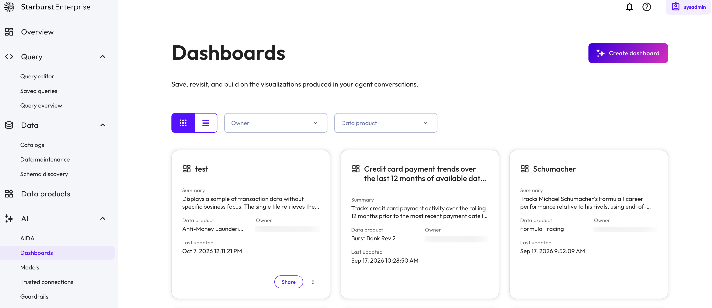

Starburst AI dashboards#
Note
Dashboards are available as a public preview feature. Contact your Starburst account team with questions or feedback.
Dashboards collect the charts and tables that AIDA generates in your chat sessions, so you can revisit them and share them with other roles. Each dashboard is based on a single data product and includes a summary that AIDA generates from the dashboard’s charts.
Requirements#
To create and edit dashboards, you need:
Access to AIDA.
Dashboards enabled on your cluster. For more information, see Configuration.
Access to the data product that the dashboard is based on.
To view a dashboard that is shared with you, you need a role that the dashboard is shared with. To share dashboards, your cluster must use built-in access control.
Configuration#
Dashboards are turned off by default. To turn on dashboards for your cluster, contact your Starburst account team.
View dashboards#
To view dashboards, click AI > Dashboards in the Starburst Enterprise web UI navigation menu. The Dashboards page lists the dashboards that you own and the dashboards that are shared with your role.

Each dashboard displays the following information:
Field |
Description |
|---|---|
Summary |
A description of the dashboard that AIDA generates from its charts. |
Data product |
The data product that the dashboard is based on. |
Owner |
The user who owns the dashboard. |
Last updated |
The date and time of the most recent change to the dashboard. |
When you open a dashboard, the summary appears above the charts. Charts show the data from when AIDA ran each chart’s query. After a dashboard changes, a version indicator, such as v2, appears next to its name.
Create a dashboard#
You create dashboards from AIDA chat sessions. You can save a chart from a chat response, or ask AIDA to build a dashboard for you. To start a chat session from the Dashboards page, click Create dashboard.
Save a chart to a dashboard#
To save a chart from a chat response to a new dashboard:
On the chart, click Create dashboard.
In the Create dashboard dialog, enter a Dashboard name.
In Chart title (optional), enter a title for the chart.
Click Create dashboard.
To add a chart from a chat response to an existing dashboard:
On the chart, click Add to dashboard.
In the Add to selected dashboard dialog, select a dashboard. The list includes the dashboards that you own for the same data product.
Optional: In Name, enter a title for the chart.
Click Add to dashboard.
Ask AIDA to build a dashboard#
To have AIDA build a dashboard with multiple charts, include the word
dashboard in your prompt. For example:
Build a dashboard of monthly transaction volume and the top ten accounts by
amount.
AIDA might ask clarifying questions before it builds the dashboard. AIDA displays the draft dashboard in a panel next to the chat. To save the draft, click Create dashboard in the panel. Unsaved drafts are deleted with the chat session.
When you ask for a dashboard, AIDA plans the charts, runs a query for each chart, and assembles the results into a draft dashboard.
Open dashboards in AIDA#
In AIDA, click the dashboard_2 Dashboards tab to list the dashboards that you own for the selected data product. From this tab, you can search for, rename, or delete your dashboards. Click a dashboard to open it.
Edit a dashboard#
Only the dashboard owner can edit a dashboard. Your changes are visible to everyone who can view the dashboard.
To rename a dashboard, on the Dashboards page, click the more_vert options menu on the dashboard, and select Edit details. Enter a new Name, then click Save.
To reorder the charts on a dashboard, drag a chart by the handle in its header.
Customize a dashboard chart#
You can change the title, chart type, value axis, and series colors of a chart on a dashboard without sending a prompt to AIDA.
Open the dashboard.
In the chart header, click the more_vert options menu, and select edit Customize.
In the Customize dialog, change any of the following settings:
Title: The chart title.
Chart type: Select Bar chart, Line chart, Pie chart, Side bar chart, or Histogram. Chart types that cannot represent the data are unavailable.
Value axis: Select Automatic, Start at 0, or Fit to data. The value axis setting applies to bar, side bar, and line charts only.
Colors: Click the edit icon next to a series to change its color.
Review your changes in the Preview pane, then click Save.
For more information about each setting, see Customize a chart.
When you add a chart to a dashboard, the dashboard saves its own copy of the chart. Customizing the dashboard chart does not change the chart in your chat session, and you can customize the dashboard chart as many times as you want.
For a data table or KPI tile, you can change only the title. The title of a KPI tile is optional. You cannot convert a data table to a chart.
Delete a dashboard chart#
In the chart header, click the more_vert options menu, and select delete Delete.
In the Delete chart dialog, click Delete.
Deleting a chart from a dashboard does not affect the chart in your chat session.
A dashboard must contain at least one chart, so you cannot delete the last chart on a dashboard. To remove the last chart, delete the dashboard.
Change the owner of a dashboard#
Only the dashboard owner can change the owner.
On the Dashboards page, click the more_vert options menu on the dashboard, and select Change owner.
In New owner (username), enter the username of the new owner.
Click Save.
After you change the owner, only the new owner can edit, share, or delete the dashboard. The new owner must have access to the dashboard’s data product to see the dashboard. Existing shares remain in place.
Delete a dashboard#
On the Dashboards page, click the more_vert options menu on the dashboard, and select Delete.
Click Delete to confirm.
Deleting a dashboard is permanent. It also removes access for every role that the dashboard is shared with.
Best practices#
Select the data product first. Each dashboard is based on a single data product. Select the data product in AIDA before you ask for a dashboard.
Include the word
dashboardin your prompt. AIDA builds a dashboard only when your prompt asks for one.Name the measures and breakdowns that you want to see. For example,
Build a dashboard of monthly revenue by region and the top 10 products by units sold.Ask for 12 or fewer charts. A dashboard can contain up to 12 charts.
Answer clarifying questions. If your request is ambiguous, AIDA asks clarifying questions before it builds the dashboard.
Ask for summarized results. Each chart saves up to 1,000 rows. Ask for totals, averages, or top values instead of individual rows.
Adjust charts after you save the dashboard. To change the title, chart type, value axis, or colors of a chart, customize the chart instead of sending another prompt.
Limitations#
A dashboard can contain up to 12 charts.
Each chart saves up to 1,000 rows of data.
Dashboard data does not refresh. Charts show the data from when AIDA ran each chart’s query.
Each dashboard is based on a single data product.